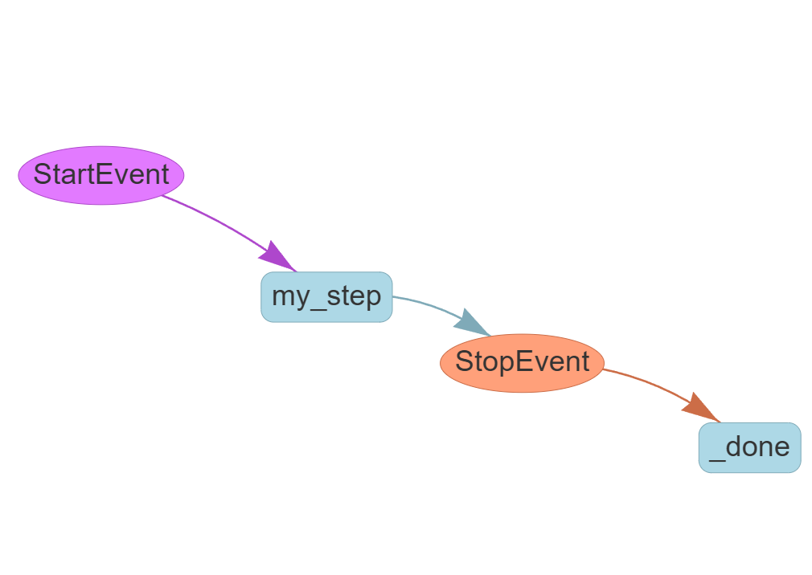
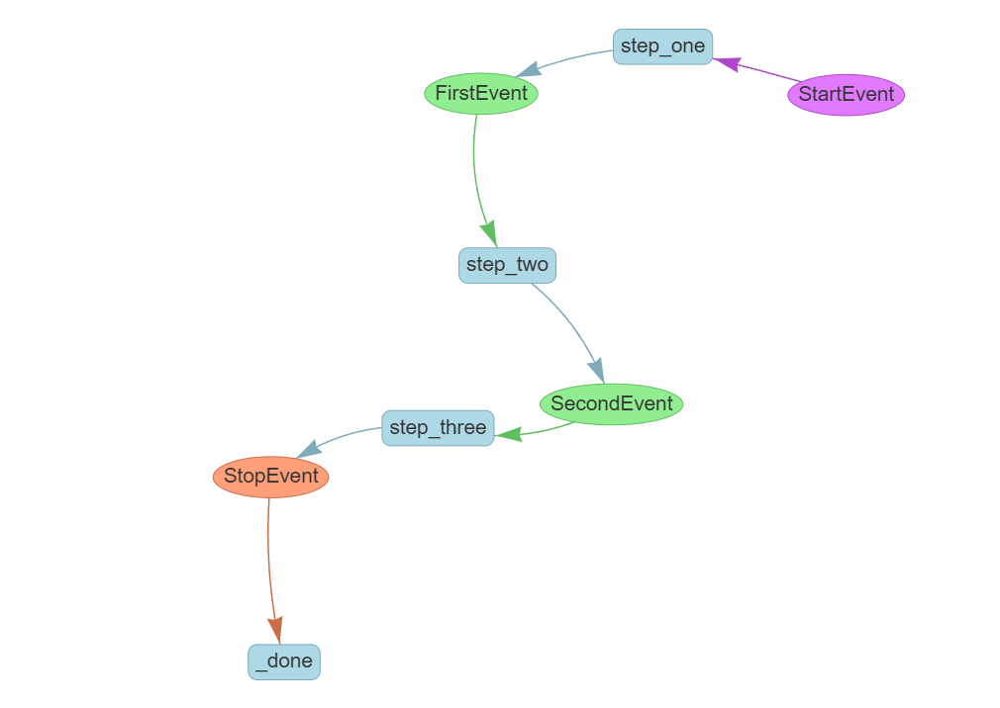

基础工作流#
开始使用#
工作流已内置在LlamaIndex核心中，因此您只需安装以下包即可使用：
pip install llama-index-core
在开发过程中，您可能会发现可视化工作流很有帮助；您可以通过安装我们的内置可视化工具来实现：
pip install llama-index-utils-workflow
依赖项#
工作流的最小依赖项如下：
from llama_index.core.workflow import (
StartEvent,
StopEvent,
Workflow,
step,
)
单步工作流#
工作流通常实现为继承自Workflow的类。该类可以定义任意数量的步骤，每个步骤都是用@step装饰的方法。以下是最简单的工作流示例：
class MyWorkflow(Workflow):
@step
async def my_step(self, ev: StartEvent) -> StopEvent:
# 在此执行操作
return StopEvent(result="Hello, world!")
w = MyWorkflow(timeout=10, verbose=False)
result = await w.run()
print(result)
这将简单地在控制台打印"Hello, World!"。
在这段代码中我们：
- 定义继承自
Workflow的类MyWorkflow - 使用@step装饰器定义单个步骤
my_step - 该步骤接受单个参数
ev，它是StartEvent的实例 - 该步骤返回带有"Hello, world!"结果的
StopEvent - 我们创建超时为10秒且关闭详细模式的
MyWorkflow实例 - 我们运行工作流并打印结果
步骤的类型注解#
类型注解（如ev: StartEvent）和-> StopEvent对工作流的运行方式至关重要。预期类型决定了哪些事件类型会触发步骤。可视化工具（见下文）等工具也依赖这些注解来确定生成哪些类型以及控制流下一步的去向。
类型注解在编译时进行验证，因此如果您发出的事件从未被其他步骤消费，您将收到错误消息。
开始和停止事件#
StartEvent和StopEvent是用于启动和停止工作流的特殊事件。任何接受StartEvent的步骤都将由run命令触发。发出StopEvent将结束工作流的执行并返回最终结果，即使其他步骤仍未执行。
在常规Python中运行工作流#
工作流默认是异步的，因此您使用await来获取run命令的结果。这在笔记本环境中可以正常工作；在普通Python脚本中，您需要导入asyncio并将代码包装在异步函数中，如下所示：
async def main():
w = MyWorkflow(timeout=10, verbose=False)
result = await w.run()
print(result)
if __name__ == "__main__":
import asyncio
asyncio.run(main())
在本教程的其余示例中，为简单起见，我们将假设使用异步环境。
可视化工作流#
工作流的一个很棒的特性是内置的可视化工具，我们已经安装过了。让我们可视化刚刚创建的简单工作流：
from llama_index.utils.workflow import draw_all_possible_flows
draw_all_possible_flows(
MyWorkflow,
filename="basic_workflow.html",
# 可选，可以限制工作流中长事件名称
# 有助于提高可读性
# max_label_length=10,
)
这将在当前目录中创建一个名为basic_workflow.html的文件。在浏览器中打开它以查看工作流的交互式可视化表示。它将看起来像这样：

当然，只有一个步骤的流程并不实用！让我们定义一个多步骤的工作流。
自定义事件#
通过定义可由步骤发出并触发其他步骤的自定义事件来创建多个步骤。让我们定义一个简单的3步工作流。
我们像之前一样导入，再加上一个新的Event导入：
from llama_index.core.workflow import (
StartEvent,
StopEvent,
Workflow,
step,
Event,
)
from llama_index.utils.workflow import draw_all_possible_flows
现在我们定义两个自定义事件FirstEvent和SecondEvent。这些类可以有任何名称和属性，但必须继承自Event：
class FirstEvent(Event):
first_output: str
class SecondEvent(Event):
second_output: str
定义工作流#
现在我们定义工作流本身。我们通过定义每个步骤的输入和输出类型来实现。
step_one接受StartEvent并返回FirstEventstep_two接受FirstEvent并返回SecondEventstep_three接受SecondEvent并返回StopEvent
class MyWorkflow(Workflow):
@step
async def step_one(self, ev: StartEvent) -> FirstEvent:
print(ev.first_input)
return FirstEvent(first_output="First step complete.")
@step
async def step_two(self, ev: FirstEvent) -> SecondEvent:
print(ev.first_output)
return SecondEvent(second_output="Second step complete.")
@step
async def step_three(self, ev: SecondEvent) -> StopEvent:
print(ev.second_output)
return StopEvent(result="Workflow complete.")
w = MyWorkflow(timeout=10, verbose=False)
result = await w.run(first_input="Start the workflow.")
print(result)
完整输出将是
Start the workflow.
First step complete.
Second step complete.
Workflow complete.
我们可以使用可视化工具查看此工作流中所有可能的流程：
from llama_index.utils.workflow import draw_all_possible_flows
draw_all_possible_flows(MyWorkflow, filename="multi_step_workflow.html")

当然，如果只是从头到尾运行一遍，工作流仍然没有多大意义！让我们进行一些分支和循环。